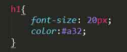

Grammaire du HTML-CSS
Introduction : La double articulation appliquée au web
Dans cette article, nous faisons la proposition que la linguistique peut-être une clef de description des langages informatiques tels que html et css. Nous illustrerons ceci en nous servant d'un concept linguistique élaboré par André Martinet : la double articulation. Nous nous efforceront d'abord de le définir dans le domaine linguistique avant de le décliner dans le cadre des deux principaux langages web.
- Plan de l'article
- Introduction : La double articulation appliquée au web
- 1. La première articulation
- 2. La deuxième articulation
- 3. Déclinaison au html-css
- Conclusion : une matrice linguistique
1. La première articulation
1.1 L'articulation des mots
La double articulation est un concept élaboré par André Martinet pour décrire le fonctionnement des langues naturelles. Tout langage est doublement articulé en ce qu'il se compose de deux séries d'éléments qui participent à la production du sens. Considérons la phrase suivante :
Le chien mord.
Cette phrase est composée de trois mots qui pris indépendamment les uns des autres ("le", "chien", "mord") ne véhiculent pas une signification équivalente. C'est donc que leur juxtaposition au sein d'une même phrase permet de générer du sens.
1.2 Le phénomène combinatoire
De plus, si l'on modifie l'un des mots de la phrase sans altérer la grammaticalité de celle-ci nous obtenons un sens différent. C'est une des conséquences du caractère combinatoire des langues. Prenons des mots équivalents à "chien" :
- chat
- grand-père
- rêve
Nous pouvons obtenir les phrases suivantes :
- Le chat mord.
- Le grand-père mord.
- Le rêve mord.
La première articulation est donc le fait que des mots différents agencés dans le même ordre et à condition de respecter la grammaire de la langue produisent des sens différents.
2. La seconde articulation
2.1. L'articulation des sons
La première articulation se développe au sein des mots ou syntagmes. Ces syntagmes sont des unités linguistiques constituées de sons ou de la retranscription écrite de ces sons. Prenons l'exemple du mot suivant :
Souris
De la même manière qu'au paragraphe précédent nous avons décomposé notre phrase en plusieurs mots, nous pouvons décomposer notre syntagme en plusieurs sons, ici on a les sons "s", "ou", "r" et "i". Les sons pris indépendamment les uns des autres ne forment pas le même sens que lorsqu'ils sont agrégés. Le son "r", par exemple n'a aucun rapport avec le sens de "Souris", et même, ne veut rien dire en tant que tel, contrairement à "ou" qui, en français peut s'écrire de deux manières différentes :
- ou
- où
En 1, nous sommes en présence de la conjonction de coordination. En 2, il s'agit du pronom relatif ou adverbe relatif.
2.2. Combinatoire phonétique
De même que l'on a vu que la langue était un système combinatoire au niveau de la phrase, il l'est également s'agissant d'un mot. Soit les sons suivants, en lieu et place du son "ou" :
- é
- i
- an
Nous pouvons obtenir les mots suivants :
- Série
- Syrie ou scierie
- Sanri
La seconde articulation est donc le fait que des sons différents agencés dans le même ordre produisent un mot différent à condition que celui-ci existe. En effet, "Série" et "Souris" existent mais "Sanri" n'existe pas.
3. Déclinaison au html-css
3.1. Le html comme première combinatoire
Nous avons vu que la première articulation permettait des permutations pour produire des phrases. Nous allons de extrapoler cette définition html. De même qu'une phrase est composée de mots, une page html est composée de balises. Soit le code suivant :

La balise h1 nous signale qu'il s'agit d'un titre. Mais je pourrais tout à fait avoir :

Dans ce dernier cas, ce n'est plus un titre, mais un paragraphe. Le choix de la balise html est donc une combinatoire qui permet de modifier la sémantique du contenu.
3.2. Le css comme seconde combinatoire
La similitude entre le choix de la balise html et la double articulation peut dès lors être poursuivie pour le cas du css. Celui-ci, comme on le sait déjà, ne s'intéresse qu'à la mise en forme des éléments qu'il pilote. Il ne s'agit donc plus de sémantique pour lequel le css nous est indifférent. Donc, la seconde combinatoire est purement visuelle, pour le h1, nous pouvons ainsi demander :
Il s'agit ici d'avoir une certaine taille de police et une certaine couleur de texte. Mais ces choix sont, comme pour la seconde articulation de Martinet, modifiables, par exemple :

Dans ce dernier cas, ma police sera plus petite et le texte d'une teinte différente.
Conclusion : une matrice linguistique
Pour conclure sur ce petit exercice de linguistique appliquée nous pouvons déjà rappeler comment nous avons construit notre comparaison. De même que remplacer un mot par un autre dans une phrase en modifie le sens, le choix d'une balise html au détriment d'une autre modifie la sémantique du contenu que cette balise encadre. Ceci vaut pour la première articulation. De même que la modification d'un son dans un mot peut modifier la nature de ce mot tant que celui-ci existe, la modification des règles du css produit un résultat visuel différent tant que la règle écrite respecte la syntaxe du css. Ceci vaut pour la deuxième articulation.
Appliquer certains concepts linguistiques aux langages informatiques, tel celui de double articulation, permet de jeter une autre lumière sur le fonctionnement des codes entre eux. C'est donc une pratique, le croyons-nous, à systématiser afin d'en éprouver la fécondité.